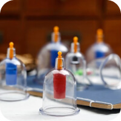

Tabiiy davolash usullari yordamida
kasalliklardan xalos bo’ling.
Hijoma, manual terapiya, zuluk va turli tabiiy giyohlar eng
ko’p uchraydigan kasalliklarni yengishda yordam beradi.
Sog’ligingizni o’z ishining professionallariga ishonib
topshiring.
XIZMATLAR
-

Hijoma
Imom Termiziy Abdulloh ibn Abbos raziyallohu anhumodan rivoyat qilgan
hadisda rasululloh sallallohu alayhi va sallam dedilar: «Sizlar hijoma qiladigan
kunlaringizning eng yaxshisi 17, 19 va 21-kunlardir» (bu kunlar hijrij-kamariy
hisobdagi oylar kunlaridir).